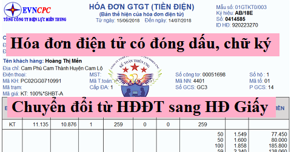
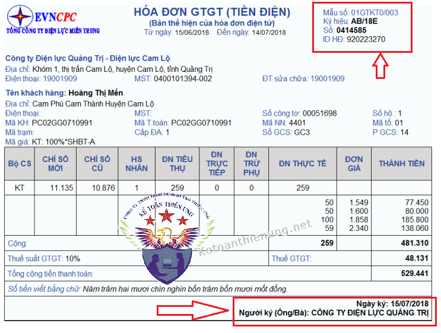

Hóa đơn điện tử có cần đóng dấu, chữ ký người mua - người bán? Hóa đơn điện tử chuyển đổi sang hóa đơn giấy có cần đóng dấu, chữ ký? Quy định về chuyển đổi hóa đơn điện tử sang hóa đơn giấy hợp lệ? Kế toán Diệu Tâm xin trích các quy định về hóa đơn chuyển đổi.
1. Quy định về định dạng hóa đơn điện tử:
Theo điều 5 Thông tư 68/2019/TT-BTC quy định:
- Định dạng hóa đơn điện tử gồm hai thành phần: thành phần chứa dữ liệu nghiệp vụ hóa đơn điện tử và thành phần chứa dữ liệu chữ ký số.
-> Đối với hóa đơn điện tử có mã của cơ quan thuế thì có thêm thành phần chứa dữ liệu liên quan đến mã cơ quan thuế.
---------------------------------------------------------------------
2. Quy định về nội dung của hóa đơn điện tử: Theo điều 6 Nghị định 119/2018/NĐ-CP quy định:
Hóa đơn trên điện tử có các nội dung sau:
b) Tên, địa chỉ, mã số thuế của người bán;
c) Tên, địa chỉ, mã số thuế của người mua (nếu người mua có mã số thuế);
d) Tên, đơn vị tính, số lượng, đơn giá hàng hóa, dịch vụ; thành tiền chưa có thuế GTGT, thuế suất thuế GTGT, tổng số tiền thuế GTGT theo từng loại thuế suất, tổng cộng tiền thuế GTGT, tổng tiền thanh toán đã có thuế GTGT trong trường hợp là hóa đơn GTGT;
đ) Tổng số tiền thanh toán;
e) Chữ ký số, chữ ký điện tử của người bán;
g) Chữ ký số, chữ ký điện tử của người mua (nếu có);
h) Thời điểm lập hóa đơn điện tử;
---------------------------------------------------------------------
3. Quy định về chữ ký số, chữ ký điện tử của người bán và người mua:Theo điều 3 Thông tư 68/2019/TT-BTC quy định:
- Trường hợp người bán là doanh nghiệp, tổ chức thì chữ ký số của người bán trên hóa đơn là chữ ký số của doanh nghiệp, tổ chức;
Trường hợp người bán là cá nhân thì sử dụng chữ ký số của cá nhân hoặc người được ủy quyền.
- Trường hợp người mua là cơ sở kinh doanh và người mua, người bán có thỏa thuận về việc người mua đáp ứng các điều kiện kỹ thuật để ký số, ký điện tử trên hóa đơn điện tử do người bán lập thì người mua ký số, ký điện tử trên hóa đơn.
Như vậy:
- Trên hóa đơn điện tử phải có chữ ký số của người bán, không nhất thiết phải có chữ ký số của người mua (Nhưng phải có đầy đủ Tên, địa chỉ, mã số thuế người mua).
- Nếu người mua đáp ứng điều kiện kỹ thuật để ký số, ký điện tử và có thỏa thuận với bên bán -> Thì người mua phải ký điện tử trên hóa đơn điện tử.
|
- Trường hợp hóa đơn điện tử không nhất thiết phải có chữ ký số, chữ ký điện tử của người bán và người mua thực hiện theo quy định như sau: a) Trên hóa đơn điện tử không nhất thiết phải có chữ ký điện tử của người mua (bao gồm cả trường hợp lập hóa đơn điện tử khi bán hàng hóa, cung cấp dịch vụ cho khách hàng ở nước ngoài). Trường hợp người mua là cơ sở kinh doanh và người mua, người bán có thỏa thuận về việc người mua đáp ứng các điều kiện kỹ thuật để ký số, ký điện tử trên hóa đơn điện tử do người bán lập thì hóa đơn điện tử có chữ ký số, ký điện tử của người bán và người mua theo thỏa thuận giữa hai bên. b) Đối với hóa đơn điện tử bán hàng tại siêu thị, trung tâm thương mại mà người mua là cá nhân không kinh doanh thì trên hóa đơn không nhất thiết phải có tên, địa chỉ, mã số thuế người mua. c) Đối với hóa đơn điện tử bán xăng dầu cho khách hàng là cá nhân không kinh doanh thì không nhất thiết phải có các chỉ tiêu tên hóa đơn, ký hiệu mẫu số hóa đơn, ký hiệu hóa đơn, số hóa đơn; tên, địa chỉ, mã số thuế của người mua, chữ ký điện tử của người mua; chữ ký số, chữ ký điện tử của người bán, thuế suất thuế giá trị gia tăng. Người bán phải đảm bảo lưu trữ đầy đủ hóa đơn điện tử đối với trường hợp bán xăng dầu cho khách hàng là cá nhân không kinh doanh theo quy định và đảm bảo có thể tra cứu khi cơ quan có thẩm quyền yêu cầu. d) Đối với hóa đơn điện tử là tem, vé, thẻ thì trên hóa đơn không nhất thiết phải có chữ ký điện tử, chữ ký số của người bán (trừ trường hợp tem, vé, thẻ là hóa đơn điện tử do cơ quan thuế cấp mã), tiêu thức người mua (tên, địa chỉ, mã số thuế), tiền thuế, thuế suất thuế giá trị gia tăng. Trường hợp tem, vé, thẻ điện tử có sẵn mệnh giá thì không nhất thiết phải có tiêu thức đơn vị tính, số lượng, đơn giá. đ) Đối với chứng từ điện tử dịch vụ vận tải hàng không xuất qua website và hệ thống thương mại điện tử được lập theo thông lệ quốc tế cho người mua là cá nhân không kinh doanh được xác định là hóa đơn điện tử thì trên hóa đơn không nhất thiết phải có ký hiệu hóa đơn, ký hiệu mẫu hóa đơn, số thứ tự hóa đơn, thuế suất thuế giá trị gia tăng, mã số thuế, địa chỉ người mua, chữ ký số, chữ ký điện tử người bán. Trường hợp tổ chức kinh doanh hoặc tổ chức không kinh doanh mua dịch vụ vận tải hàng không thì chứng từ điện tử dịch vụ vận tải hàng không xuất qua website và hệ thống thương mại điện tử được lập theo thông lệ quốc tế cho các cá nhân của tổ chức kinh doanh, cá nhân của tổ chức không kinh doanh thì không được xác định là hóa đơn điện tử. Doanh nghiệp kinh doanh dịch vụ vận tải hàng không hoặc đại lý phải lập hóa đơn điện tử có đầy đủ các nội dung theo quy định giao cho tổ chức có cá nhân sử dụng dịch vụ vận tải hàng không. h) Hóa đơn sử dụng cho thanh toán Interline giữa các hãng hàng không được lập theo quy định của Hiệp hội vận tải hàng không quốc tế thì trên hóa đơn không nhất thiết phải có các chỉ tiêu: ký hiệu hóa đơn, ký hiệu mẫu hóa đơn, tên địa chỉ, mã số thuế của người mua, chữ ký điện tử của người mua, đơn vị tính, số lượng, đơn giá. - Hóa đơn được khởi tạo từ máy tính tiền kết nối chuyển dữ liệu điện tử với cơ quan thuế đảm bảo nguyên tắc sau: a) Nhận biết được hóa đơn in từ máy tính tiền kết nối chuyển dữ liệu điện tử với cơ quan thuế; b) Không bắt buộc có chữ ký số; |

--------------------------------------------------------------------------------------------------
II. Quy định chuyển đổi hóa đơn điện tử sang hóa đơn giấy:
Theo điều 10 Nghị định 119/2018/NĐ-CP quy định hóa đơn điện tử chuyển đổi sang hóa đơn giấy, cụ thể như sau:1. Hóa đơn điện tử hợp pháp được chuyển đổi thành chứng từ giấy.
Xem thêm: Hóa đơn điện tử hợp pháp.
2. Việc chuyển đổi hóa đơn điện tử thành chứng từ giấy phải bảo đảm sự khớp đúng giữa nội dung của hóa đơn điện tử và chứng từ giấy sau khi chuyển đổi.
3. Hóa đơn điện tử được chuyển đổi thành chứng từ giấy thì chứng từ giấy chỉ có giá trị lưu giữ để ghi sổ, theo dõi theo quy định của pháp luật về kế toán, pháp luật về giao dịch điện tử, không có hiệu lực để giao dịch, thanh toán, trừ trường hợp hóa đơn được khởi tạo từ máy tính tiền có kết nối chuyển dữ liệu điện tử với cơ quan thuế theo quy định tại Nghị định này.
-----------------------------------------------------------------
Chú ý: Trước đây Hóa đơn điện tử chỉ được chuyển đổi 1 lần và để chứng minh hàng hóa lưu thông trên thị trường. Hóa đơn chuyển đổi phải có chữ ký, dấu của người bán.
=> Nhưng hiện tại theo quy định tại Điều 29 Nghị định 119/2018/NĐ-CP:
Tra cứu thông tin hóa đơn điện tử phục vụ kiểm tra hàng hóa lưu thông trên thị trường
1. Khi kiểm tra hàng hóa lưu thông trên thị trường, đối với trường hợp sử dụng hóa đơn điện tử, cơ quan nhà nước, người có thẩm quyền truy cập Cổng thông tin điện tử của Tổng cục Thuế để tra cứu thông tin về hóa đơn điện tử phục vụ yêu cầu quản lý, không yêu cầu cung cấp hóa đơn giấy. Các cơ quan có liên quan có trách nhiệm sử dụng các thiết bị để truy cập tra cứu dữ liệu hóa đơn điện tử.
2. Trường hợp bất khả kháng do sự cố, thiên tai gây ảnh hưởng đến việc truy cập mạng Internet dẫn đến không tra cứu được dữ liệu hóa đơn, nếu:
a) Trường hợp người vận chuyển hàng hóa có chứng từ giấy (bản sao bằng giấy không cần ký tên, đóng dấu của người mua, người bán hàng hóa) chuyển từ hóa đơn điện tử thì xuất trình chứng từ giấy chuyển cho cơ quan nhà nước, người có thẩm quyền đang thực hiện kiểm tra hàng hóa.
Cơ quan nhà nước, người có thẩm quyền đang thực hiện kiểm tra căn cứ chứng từ giấy chuyển từ hóa đơn điện tử để lưu thông hàng hóa và tiếp tục thực hiện tra cứu dữ liệu hóa đơn điện tử (tại đầu mối đăng ký với Tổng cục Thuế) để phục vụ công tác kiểm tra để xử lý theo quy định;
b) Trường hợp người vận chuyển hàng hóa không có chứng từ giấy chuyển từ hóa đơn điện tử thì cơ quan nhà nước, người có thẩm quyền đang thực hiện kiểm tra truy cập Cổng thông tin điện tử của Tổng cục Thuế để kiểm tra, xác nhận hóa đơn điện tử của doanh nghiệp.
Theo Khoản 5 điều 6 Thông tư 68/2019/TT-BTC:
a) Trường hợp nhận nhập khẩu hàng hóa ủy thác, nếu cơ sở kinh doanh nhận nhập khẩu ủy thác đã nộp thuế giá trị gia tăng ở khâu nhập khẩu thì sử dụng hóa đơn điện tử khi trả hàng cho cơ sở kinh doanh ủy thác nhập khẩu.
-> Nếu chưa nộp thuế giá trị gia tăng ở khâu nhập khẩu, khi xuất trả hàng nhập khẩu ủy thác, cơ sở nhận ủy thác lập phiếu xuất kho kiêm vận chuyển điện tử theo quy định làm chứng từ lưu thông hàng hóa trên thị trường.
c) Cơ sở kinh có hàng hóa, dịch vụ xuất khẩu (kể cả cơ sở gia công hàng hóa xuất khẩu) khi xuất khẩu hàng hóa, dịch vụ sử dụng hóa đơn giá trị gia tăng điện tử hoặc hóa đơn bán hàng điện tử.
Khi xuất hàng hóa để vận chuyển đến cửa khẩu hay đến nơi làm thủ tục xuất khẩu, cơ sở sử dụng Phiếu xuất kho kiêm vận chuyển điện tử theo quy định làm chứng từ lưu thông hàng hóa trên thị trường. Sau khi làm xong thủ tục cho hàng hóa xuất khẩu, cơ sở lập hóa đơn giá trị gia tăng hoặc hóa đơn bán hàng cho hàng hóa xuất khẩu.
--------------------------------------------------------------------------------
Chuyển đổi HĐĐT sang hóa đơn giấy có nhiều trang:
Theo Công văn 2806/TCT-CS ngày 18/7/2018 của Tổng cục thuế
"Về tiêu thức chữ ký điện tử của người mua trên hóa đơn điện tử, Bộ Tài chính đã có công văn số 2402/BTC-TCT ngày 23/02/2016 gửi Cục Thuế các tỉnh, thành phố trực thuộc Trung ương.
Căn cứ Điều 12 Thông tư số 32/2011/TT-BTC ngày 14/03/2011 của Bộ Tài chính và Điều 19 Thông tư số 39/2014/TT-BTC ngày 31/03/2014 của Bộ Tài chính, theo đó trường hợp chuyển đổi hóa đơn điện tử sang hóa đơn giấy được thể hiện hóa đơn nhiều hơn một trang nêu trên phần đầu trang sau của hóa đơn có hiển thị: cùng số hóa đơn như của trang đầu (do hệ thống máy tính cấp tự động); cùng tên, địa chỉ, MST của người mua, người bán như trang đầu; cùng mẫu và ký hiệu hóa đơn như trang đầu; kèm theo ghi chú bằng tiếng Việt không dấu “tiep theo trang truoc - trang X/Y" (trong đó X là số thứ tự trang và Y là tổng số trang của hóa đơn đó).”
Tổng cục Thuế có ý kiến Công ty Cổ phần ô tô Trường Hải được biết./."
Theo Công văn 2806/TCT-CS ngày 18/7/2018 của Tổng cục thuế
"Về tiêu thức chữ ký điện tử của người mua trên hóa đơn điện tử, Bộ Tài chính đã có công văn số 2402/BTC-TCT ngày 23/02/2016 gửi Cục Thuế các tỉnh, thành phố trực thuộc Trung ương.
Căn cứ Điều 12 Thông tư số 32/2011/TT-BTC ngày 14/03/2011 của Bộ Tài chính và Điều 19 Thông tư số 39/2014/TT-BTC ngày 31/03/2014 của Bộ Tài chính, theo đó trường hợp chuyển đổi hóa đơn điện tử sang hóa đơn giấy được thể hiện hóa đơn nhiều hơn một trang nêu trên phần đầu trang sau của hóa đơn có hiển thị: cùng số hóa đơn như của trang đầu (do hệ thống máy tính cấp tự động); cùng tên, địa chỉ, MST của người mua, người bán như trang đầu; cùng mẫu và ký hiệu hóa đơn như trang đầu; kèm theo ghi chú bằng tiếng Việt không dấu “tiep theo trang truoc - trang X/Y" (trong đó X là số thứ tự trang và Y là tổng số trang của hóa đơn đó).”
Tổng cục Thuế có ý kiến Công ty Cổ phần ô tô Trường Hải được biết./."
---------------------------------------------------------------------------
III. Quy định về Bảo quản, lưu trữ, tiêu hủy hóa đơn điện tử:Theo điều 11 Nghị định 119/2018/NĐ-CP
1. Hóa đơn điện tử được bảo quản, lưu trữ bằng phương tiện điện tử.
2. Cơ quan, tổ chức, cá nhân được quyền lựa chọn và áp dụng hình thức bảo quản, lưu trữ hóa đơn điện tử phù hợp với đặc thù hoạt động và khả năng ứng dụng công nghệ của mình.
3. Lưu trữ hóa đơn điện tử phải đảm bảo:
a) Tính an toàn bảo mật, toàn vẹn, đầy đủ, không bị thay đổi, sai lệch trong suốt thời gian lưu trữ;
b) Lưu trữ đúng và đủ thời hạn theo quy định của pháp luật kế toán;
c) In được ra giấy hoặc tra cứu được khi có yêu cầu.
4. Hóa đơn điện tử đã hết thời hạn lưu trữ theo quy định của pháp luật kế toán, nếu không có quy định khác của cơ quan nhà nước có thẩm quyền thì được tiêu hủy. Việc tiêu hủy hóa đơn điện tử không được làm ảnh hưởng đến tính toàn vẹn của các thông điệp dữ liệu hóa đơn chưa được tiêu hủy và hoạt động bình thường của hệ thống thông tin.
---------------------------------------------------------------------------------------------
Xem thêm: Cách tra cứu hóa đơn điện tử hợp pháp
--------------------------------------------------------------------------
Kế toán Diệu Tâm xin chúc các bạn thành công.
Các bạn muốn tìm hiểu chuyên sau hơn về hóa đơn, kế toán thuế, quyết toán thuế có thể tham gia: Lớp học thực hành kế toán thuế chuyên sâu.
Các bạn muốn tìm hiểu chuyên sau hơn về hóa đơn, kế toán thuế, quyết toán thuế có thể tham gia: Lớp học thực hành kế toán thuế chuyên sâu.
----------------------------------------------------------------------------------------------------
